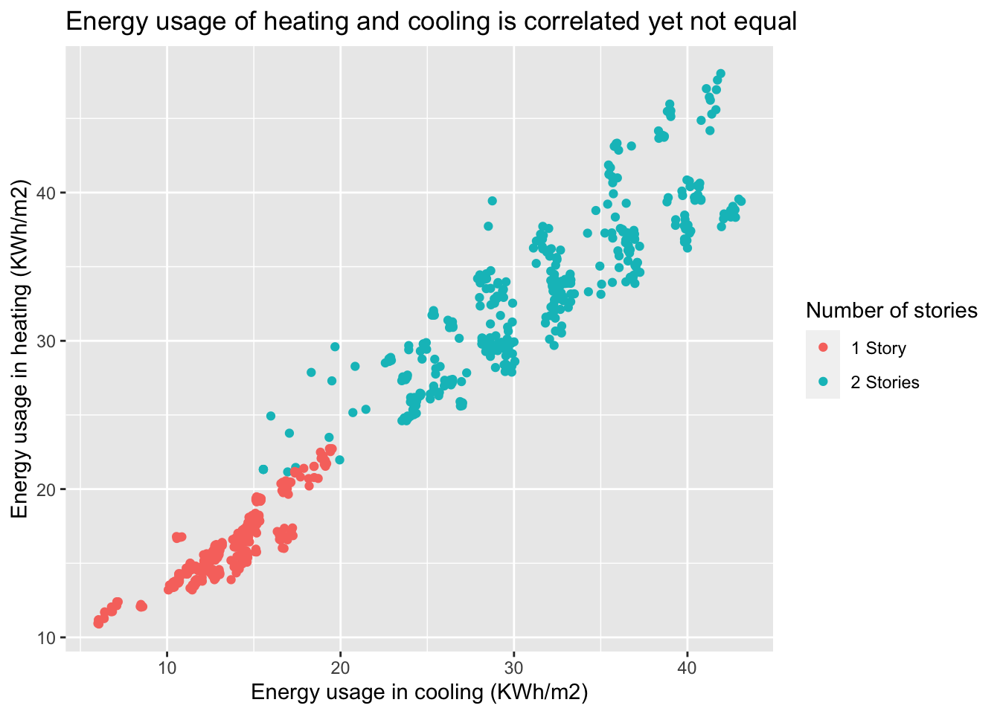
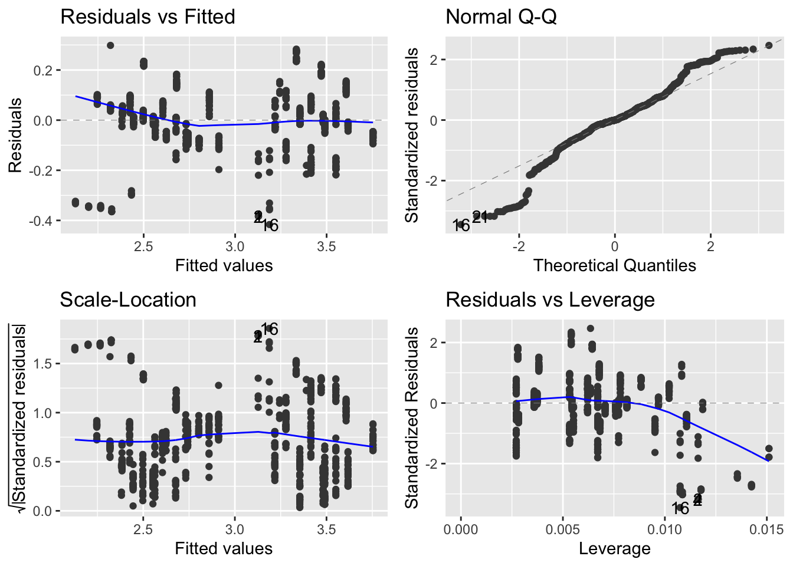
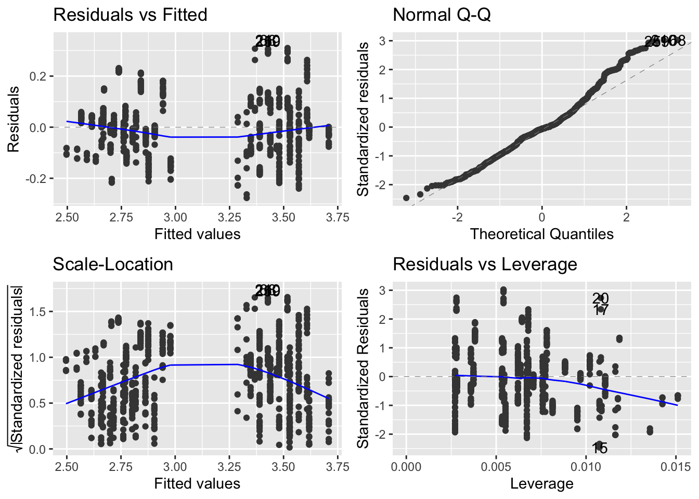
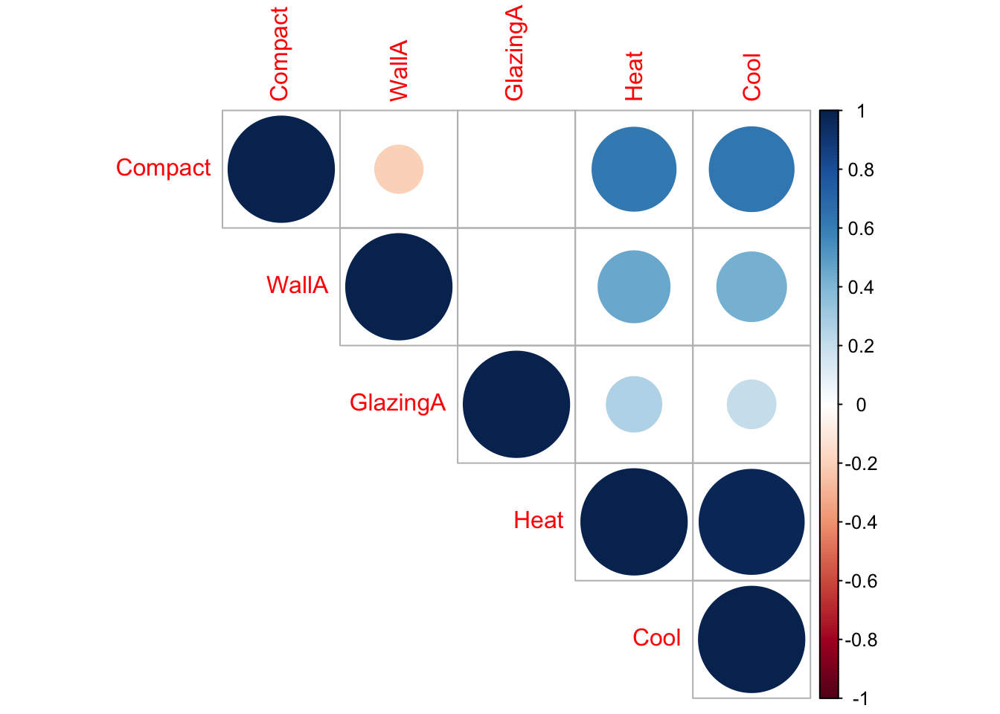

Andrew Pochman, Spencer Wilson, Walter Vogelmann, Zach Perry
Abstract
This study developed a linear regression model to predict the impact of various architectural design features on climate control energy efficiency. Key variables tested included volume to surface area ratio, floor plan area, area of external walls, number of stories, and area of windows, aiming to predict heating or cooling load in KWh per square meter. Significant predictors identified were area of external walls, number of stories, area of windows, and the interaction between number of stories and area of windows. External wall area showed the highest coefficient, indicating increased difficulty in heating and cooling control with a more robust exterior. Additionally, increases in area—whether through stories, window area, or their interaction—increased heating and cooling load, with a larger impact on heating load compared to cooling. Despite meeting assumptions of independent sampling, no influential points, and equal variance, the model struggled with normality issues in residuals, affecting precision and potentially reliability. Findings suggest that reducing external wall area, minimizing windows, and limiting the number of stories can decrease energy consumption for climate control. The models developed can aid in predicting energy consumption for architectural projects or for individuals considering energy efficiency in residences. Future research could explore additional variables and consider models like random forests to address normality issues.
1 Problem and Motivation
This study was done to examine the effects of architectural design features on the energy efficiency of building design. Heating and cooling contribute to a significant portion of energy usage in many buildings around the world. By using sound architectural principles, we can reduce energy costs and carbon emissions. These data can help us to understand what design features are most connected with reduced energy usage. It’s important to focus conservation efforts on the vectors that matter most.
In our chosen study, researchers simulated the effects of several different factors that might affect energy usage when cooling or heating a building. In addition, they reported slightly different effects of these factors on the heating cost and cooling costs individually.
The following graph illustrates this idea. It compares the energy usage for heating and cooling:
ggplot(data = energy) +geom_point(aes(x = Heat, y = Cool, color = twoStories)) +scale_color_discrete(labels =c("1 Story", "2 Stories")) +labs(title ="Energy usage of heating and cooling is correlated yet not equal",color ="Number of stories",x ="Energy usage in cooling (KWh/m2)",y ="Energy usage in heating (KWh/m2)" )

We’ll compare and contrast the effects of different factors on heating and cooling; it’s interesting to note visually the relationship between heating costs and cooling costs. Rarely will a building be very efficient at heating but not at cooling or vice-versa. You can also see the effect of the number of stories a house has; many of the two story houses needed more energy for both heating and cooling.
1.1 Data Description
This data was originally sampled from architectural simulation software (Ecotect) that simulates many things about architectural designs, including their energy efficiency and heating/cooling requirements. Each observation represents a different design for a building and its simulated heating and cooling load. Below is a table describing the different variables collected:
Feature
Range
Unit
Description
RelativeCompactness
0.68–0.98
-
The volume to surface ratio compared to the most compact shape with same volume
SurfaceArea
514–808
\(m^2\)
The total area occupied by the floor plan of the building
WallArea
245–416
\(m^2\)
Total area of the exterior building wall including all openings
RoofArea
110–220
\(m^2\)
the surface area of the roof
OverallHeight
3.5–7
m
Height from the lowest point of conditioned space to the highest point
GlazingArea
0–0.4
\(m^2\)
The total area of the walls occupied by windows
Output
HeatingLoad
6–43
KWh/\(m^2\)
Amount of heat added per square meter to maintain comfortable temperature
CoolingLoad
10–48
KWh/\(m^2\)
The amount of heat removed per square meter to maintain comfortable temperature
1.2 Questions of Interest
Do architectural factors such as the dimensions of the walls and roof, the size of windows, and overall compactness of a house have an effect on its energy efficiency when cooling?
Do these same factors have a different effect on the efficiency when warming the house?
1.3 Regression Methods
Our route to achieving a good model for the data was a long one. We needed to employ many different strategies to first pick the variables which we included, and then to apply transformations to those variables to meet the conditions for a linear model. Our variable selection code can be found in the appendix.
First in our assumptions is a linear relationship. The core premise of multiple linear regression is the existence of a linear relationship between the response and the explanatory variables, which was displayed in the scatterplot above.
# Heat Linear Modelheat_trans_lm_small <-lm(log(Heat) ~log(WallA) + twoStories + GlazingA + twoStories*GlazingA, data = energy)shapiro.test(heat_trans_lm_small$residuals)
Shapiro-Wilk normality test
data: heat_trans_lm_small$residuals
W = 0.96269, p-value = 4.415e-13
# Cool Linear Modelcool_trans_lm_small <-lm(log(Cool) ~log(WallA) + twoStories + GlazingA + twoStories*GlazingA, data = energy) # best model so farshapiro.test(cool_trans_lm_small$residuals)
Shapiro-Wilk normality test
data: cool_trans_lm_small$residuals
W = 0.97676, p-value = 1.063e-09
Next, we need normality, which assumes that the residuals are normally distributed. For this, we performed many Wilk-Shapiro tests and this is where we hit a wall. Despite our best efforts, we could not get our data to be normal. We were able to minimize the break of this assumption as much as possible, but we finally concluded that this is just a weakness from the data. Here are our other plots for this assumption:
autoplot(heat_trans_lm_small)

autoplot(cool_trans_lm_small)

As the plots show, there is relatively normal distribution on the residuals, and this came after attempting many models to get the best fit for normality. This included the least deviation on the Q-Q plot and randomized scatting of the residuals across the fitted values.
# Multicollinearity Plotcontinuous <- energy %>%select(-twoStories, -RoofA, -SurfaceA)corrplot(cor(continuous), type ='upper')

We also checked that there was no multicollinearity. This was shown in the above correlation plot. In a correlation matrices, the coefficients should ideally be below 0.80 which is the case aside from the correlation from heat and cool, which is a logical connection since they are opposites.
For the homoscedasticity assumption, the variance of error terms (residuals) should be consistent across all levels of the independent variables. A scatterplot of residuals versus predicted values should not display any discernible pattern, such as a cone-shaped distribution, which is not visible in the plots shown with the normality assumption.
The ANOVA results for the heat linear model indicate significant effects of various architectural factors on heating energy efficiency. Specifically: - Wall Area (log(WallA)): There is a highly significant effect (p < 0.001) of wall area on heating energy usage, with a large F-value of 2490.427. - Number of Stories (twoStories): Similarly, the number of stories in a building significantly impacts heating energy consumption (p < 0.001), with a substantial F-value of 7543.298. - Glazing Area (GlazingA): Glazing area also shows a significant effect (p < 0.001) on heating energy usage, with an F-value of 1022.256. - Interaction Effect (twoStories:GlazingA): The interaction between number of stories and glazing area is also significant (p = 1.482e-05), suggesting a combined influence on heating energy efficiency.
The ANOVA results for the cool linear model also reveals significant effects of architectural factors, but for cooling energy efficiency: - Wall Area (log(WallA)): Wall area significantly affects cooling energy usage (p < 0.001), with a high F-value of 1716.9988. - Number of Stories (twoStories): Similar to heating, the number of stories has a significant impact on cooling energy consumption (p < 0.001), with an F-value of 6325.5976. - Glazing Area (GlazingA): Glazing area also shows a significant effect (p < 0.001) on cooling energy usage, with an F-value of 437.9870. - Interaction Effect (twoStories:GlazingA): The interaction between number of stories and glazing area, however, is not significant (p = 0.2034), indicating no combined influence on cooling energy efficiency, which is an interesting difference from the heat model.
Confidence Intervals Interpretation for Heat Linear Model:
Intercept: The 95% confidence interval for the intercept ranges from approximately -2.41 to -1.65. This suggests that, holding all other variables constant, the expected heating load varies between -2.41 and -1.65 KWh/\(m^2\). Wall Area (log(WallA)): The 95% confidence interval for the coefficient of log(WallA) ranges from approximately 0.69 to 0.82. It implies that for each one-unit increase in wall area, the log heating load is expected to increase between 1.991087 and 2.274926 KWh/\(m^2\), holding all other variables constant. Number of Stories (twoStories1): The 95% confidence interval for the coefficient of the number of stories (twoStories1) ranges from approximately 0.83 to 0.90. It suggests that, compared to one-story buildings, two-story buildings are expected to have a log heating load between 0.83 and 0.90 KWh/\(m^2\) higher, holding all other variables constant. Glazing Area (GlazingA): The 95% confidence interval for the coefficient of GlazingA ranges from approximately 1.10 to 1.29. It implies that for each one \(m^2\) increase in glazing area, the log heating load is expected to increase between 1.10 and 1.29 KWh/\(m^2\), holding all other variables constant. Interaction Effect (twoStories1:GlazingA): The 95% confidence interval for the coefficient of the interaction term ranges from approximately -0.42 to -0.16. It suggests that the effect of the interaction between number of stories and glazing area on the log heating load is expected to decrease between -0.42 and -0.16 KWh/\(m^2\), holding all other variables constant.
Confidence Intervals Interpretation for Cool Linear Model:
Intercept: The 95% confidence interval for the intercept ranges from approximately -0.70 to 0.01. This suggests that, holding all other variables constant, the expected log cooling load varies between -0.70 and 0.01 KWh/\(m^2\). Wall Area (log(WallA)): The 95% confidence interval for the coefficient of log(WallA) ranges from approximately 0.45 to 0.58. It implies that for each one-unit increase in the log of wall area, the log cooling load is expected to increase between 0.45 and 0.58 KWh/\(m^2\), holding all other variables constant. Number of Stories (twoStories1): The 95% confidence interval for the coefficient of the number of stories (twoStories1) ranges from approximately 0.66 to 0.73. It suggests that, compared to one-story buildings, two-story buildings are expected to have a log cooling load between 0.66 and 0.73 KWh/\(m^2\) higher, holding all other variables constant. Glazing Area (GlazingA): The 95% confidence interval for the coefficient of GlazingA ranges from approximately 0.60 to 0.77. It implies that for each one \(m^2\) increase in glazing area, the log cooling load is expected to increase between 0.60 and 0.77 KWh/\(m^2\), holding all other variables constant. Interaction Effect (twoStories1:GlazingA): The 95% confidence interval for the coefficient of the interaction term ranges from approximately -0.20 to 0.04. It suggests that the effect of the interaction between number of stories and glazing area on the log cooling load is not statistically significant, as the interval includes zero.
INTERPRET PREDICTION INTERVAL HERE***
3 Conclusions
This study aimed to create a linear regression model to predict how various architecture design features impact climate control energy efficiency. The main variables we were interested in testing include volume to surface area ratio, the floor plan area, the area of external walls, number of stories, and the area of windows. Using these predictors, we attempted to predict the amount of heat added or removed in KWh per square meter (heating or cooling load).
We found the area of external walls, the number of stories, the area of windows, and the combination effect of the number of stories and the area of windows to be significant predictors of energy efficiency. The predictor with the highest coefficient was external wall area, suggesting that a more robust exterior to architecture increases the heating and cooling load more than any other variable, making it harder to add or remove heat when more window area is present. As stated, this trend was relevant for both heating and cool load, although it can be important to note that a larger external wall area did place a higher load on heating as compared to cooling. Similarly to external wall area, an increase in area, whether it be area increased by stories, area of windows, or an interaction of the two predictors also increases heating and cooling load.
Our models aimed to use these significant variables to make models that can predict heating and cooling load. When testing model assumptions, we ran into some issues with normality. Other assumptions such as independent sampling, no influential points, and equal variance were met, however our model was unable to explain variance in the tail even after multiple attempts at transforming the data using logarithmic and exponential transformations. This caused normality issues in the residuals which were noted before moving on. The largest impact of non-normal residuals is increased variance in our results. We were still able to identify trends, but our coefficients had larger than optimal margins of error which decreased our model’s precision and potentially its reliability.
Our findings have important implications for real world architextural design practice. If heating and cooling load is a concern, whether for financial or environmental reasons, houses should decrease external wall area where possible. Removing windows and limiting the number of stories in a building also decrease energy consumption when under heating and cooling loads. Our models can assist in predicting climate control energy consumption for potential architectural projects or for buyers weighing the cost of energy efficiency for a new residence.
Future research could aim to add more variables to the models or to create a random forest model, which would not be as restrained by normality issues. Placement of air conditioning or heating units within a home, types of units, and average room size are other factors that have the potential to impact heating and cooling load. Future studies could dive into more nuanced effects of those factors and their interactions with our included predictors.
4 Contributions
APPENDIX
library(tidyverse)library(ggfortify)library(corrplot)library(car)library(patchwork)library(bestglm)library(glmnet)library(readxl)set.seed(12345)energy <-read_csv("ENB2012_data.csv")energy <-as.data.frame(energy)# change col namescolnames(energy) =c('Compact', 'SurfaceA', 'WallA', 'RoofA', 'twoStories', 'Orient', 'GlazingA', 'GlazingADist', 'Heat', 'Cool')# remove data we are not usingenergy$Orient <-NULLenergy$GlazingADist <-NULL# change building height to categoricalenergy$twoStories <-ifelse(energy$twoStories ==7, 1, 0)energy$twoStories <-as.factor(energy$twoStories)summary(energy)# some visualization of the dataggplot(data = energy) +geom_point(aes(x = Heat, y = Cool, color = twoStories))ggplot(data = energy) +geom_boxplot(aes(x = twoStories, y = Heat))ggplot(data = energy) +geom_point(aes(x = Compact, y = Heat, color = twoStories), position ='jitter')ggplot(data = energy) +geom_point(aes(x = SurfaceA, y = Heat, color = twoStories), position ='jitter')ggplot(data = energy) +geom_point(aes(x = WallA, y = Heat, color = twoStories), position ='jitter')ggplot(data = energy) +geom_point(aes(x = RoofA, y = Heat, color = twoStories), position ='jitter')ggplot(data = energy) +geom_point(aes(x = GlazingA, y = Heat, color = twoStories), position ='jitter')# it looks like there will be some interaction terms with number of stories and # some of the other variables. Heating and cooling also look to be very # closely correlated# check for multicollinearity between continuous variablescontinuous <- energy %>%select(-twoStories, -RoofA, -SurfaceA)corrplot(cor(continuous), type ='upper')round(cor(continuous),2)# it looks like there is some multicollinearity between the variables# create a full linear model for both heating and coolingheating_lm <-lm(Heat ~ Compact + SurfaceA + WallA + RoofA + twoStories + GlazingA, data = energy)cooling_lm <-lm(Cool ~ Compact + SurfaceA + WallA + RoofA + twoStories + GlazingA, data = energy)summary(heating_lm)summary(cooling_lm)avPlots(heating_lm)avPlots(cooling_lm)#vif(heating_lm)# both models removed Roof Area, i think because it is perfectly multicollinear# with number of stories# check diagnostics on base modelsautoplot(heating_lm)autoplot(heating_lm, which =4)autoplot(cooling_lm)autoplot(cooling_lm, which =4)shapiro.test(heating_lm$residuals)hist(heating_lm$residuals)boxplot(heating_lm$residuals)shapiro.test(cooling_lm$residuals)hist(cooling_lm$residuals)boxplot(cooling_lm$residuals)# neither model has normally distributed errors and there could some problems# equality of variance# Interactionsanova <-aov(Heat ~ Compact*twoStories + SurfaceA*twoStories + WallA*twoStories+ GlazingA, data = energy)summary(anova)interaction.plot(x.factor = energy$Compact, trace.factor = energy$twoStories, response = energy$Heat)interaction.plot(x.factor = energy$SurfaceA, trace.factor = energy$twoStories, response = energy$Heat)interaction.plot(x.factor = energy$WallA, trace.factor = energy$twoStories, response = energy$Heat)interaction.plot(x.factor = energy$RoofA, trace.factor = energy$twoStories, response = energy$Heat)interaction.plot(x.factor = energy$GlazingA, trace.factor = energy$twoStories, response = energy$Heat)interaction.plot(x.factor = energy$GlazingA, trace.factor = energy$Compact, response = energy$Heat)# looks like number of stories has an interaction with compact, surface area,# and wall area# fit a new model with the interaction termsheat_interax_lm <-lm(Heat ~ Compact + SurfaceA + WallA + twoStories + GlazingA + WallA*twoStories + Compact*twoStories + SurfaceA*twoStories, data = energy)cool_interax_lm <-lm(Cool ~ Compact + SurfaceA + WallA + twoStories + GlazingA + WallA*twoStories + Compact*twoStories + SurfaceA*twoStories, data = energy)summary(heat_interax_lm)summary(cool_interax_lm)autoplot(heat_interax_lm)autoplot(cool_interax_lm)shapiro.test(heat_interax_lm$residuals)shapiro.test(cool_interax_lm$residuals)hist(heat_interax_lm$residuals)hist(cool_interax_lm$residuals)# a model with all the interactions still has the same problems# Variable Selection/Shrinkageheat <- energy %>%select(Compact, SurfaceA, WallA, RoofA, twoStories, GlazingA, Heat)cool <- energy %>%select(Compact, SurfaceA, WallA, RoofA, twoStories, GlazingA, Cool)heat <-as.data.frame(heat)cool <-as.data.frame(cool)heat_x <-as.matrix(heat[, 1:6]) heat_y <- heat[, 7]cool_x <-as.matrix(cool[, 1:6]) cool_y <- cool[, 7]## Ridgeheat_ridge_cv <-cv.glmnet(x = heat_x,y = heat_y, type.measure ="mse", alpha =0)autoplot(heat_ridge_cv, label =FALSE) +theme_bw() +theme(aspect.ratio =1)heat_ridge_cv$lambda.1secoef(heat_ridge_cv, s ="lambda.1se")cool_ridge_cv <-cv.glmnet(x = cool_x,y = cool_y, type.measure ="mse", alpha =0)autoplot(cool_ridge_cv, label =FALSE) +theme_bw() +theme(aspect.ratio =1)cool_ridge_cv$lambda.1secoef(cool_ridge_cv, s ="lambda.1se")## LASSOheat_lasso_cv <-cv.glmnet(x = heat_x,y = heat_y, type.measure ="mse", alpha =1)autoplot(heat_lasso_cv, label =FALSE) +theme_bw() +theme(aspect.ratio =1)heat_lasso_cv$lambda.1secoef(heat_lasso_cv, s ="lambda.1se")cool_lasso_cv <-cv.glmnet(x = cool_x,y = cool_y, type.measure ="mse", alpha =1)autoplot(cool_lasso_cv, label =FALSE) +theme_bw() +theme(aspect.ratio =1)cool_lasso_cv$lambda.1secoef(cool_lasso_cv, s ="lambda.1se")## Elastic Netheat_net_cv <-cv.glmnet(x = heat_x,y = heat_y, type.measure ="mse", alpha =0.5)autoplot(heat_net_cv, label =FALSE) +theme_bw() +theme(aspect.ratio =1)heat_net_cv$lambda.1secoef(heat_net_cv, s ="lambda.1se")cool_net_cv <-cv.glmnet(x = cool_x,y = cool_y, type.measure ="mse", alpha =0.5)autoplot(cool_net_cv, label =FALSE) +theme_bw() +theme(aspect.ratio =1)cool_net_cv$lambda.1secoef(cool_net_cv, s ="lambda.1se")## Forwardbase_mod <-lm(Heat ~1, data = heat) full_mod <-lm(Heat ~ ., data = heat) base_mod_cool <-lm(Cool ~1, data = cool) full_mod_cool <-lm(Cool ~ ., data = cool)forw_BIC <-step(base_mod,direction ="forward", scope=list(lower= base_mod, upper= full_mod),k =log(nrow(heat)))summary(forw_BIC)forw_BIC_cool <-step(base_mod_cool,direction ="forward", scope=list(lower= base_mod_cool, upper= full_mod_cool),k =log(nrow(cool)))summary(forw_BIC_cool)## Backwardback_BIC <-step(full_mod,direction ="backward", scope=list(lower= base_mod, upper= full_mod),k =log(nrow(heat)))summary(back_BIC)back_BIC_cool <-step(full_mod_cool,direction ="backward", scope=list(lower= base_mod_cool, upper= full_mod_cool),k =log(nrow(cool)))summary(back_BIC_cool)## Sequentialfull_seq_BIC <-step(full_mod,direction ="both", scope=list(lower= base_mod, upper= full_mod),k=log(nrow(heat)))summary(full_seq_BIC)full_seq_BIC_cool <-step(full_mod_cool,direction ="both", scope=list(lower= base_mod_cool, upper= full_mod_cool),k=log(nrow(cool)))summary(full_seq_BIC_cool)# all the models for both explanatory variables agree to remove roof area and # keep compact, wall area, stories, and glazing area. LASSO and Net say# remove surface area, forward and backward say keep itinvTranPlot(log(Heat) ~ Compact , data = heat, lambda =c(-1,0,1,2))invTranPlot(log(Heat) ~ WallA , data = heat, lambda =c(-1,0,1,2))invTranPlot(log(Heat) ~ GlazingA, data = heat, lambda =c(-1,0,1,2))invTranPlot(log(Cool) ~ Compact , data = cool, lambda =c(-1,0,1,2))invTranPlot(log(Cool) ~ WallA , data = cool, lambda =c(-1,0,1,2))bc =boxCox(heating_lm)lambda.opt = bc$x[which.max(bc$y)]lambda.optheat_trans_lm <-lm(log(Heat) ~1/(WallA**2) + twoStories + GlazingA + twoStories*GlazingA, data = heat)cool_trans_lm <-lm(log(Cool) ~log(Compact) +log(WallA) + twoStories + GlazingA + twoStories*GlazingA, data = cool)######## MAIN MODELS# Heat Linear Modelheat_trans_lm_small <-lm(log(Heat) ~log(WallA) + twoStories + GlazingA + twoStories*GlazingA, data = heat)autoplot(heat_trans_lm_small)anova(heat_trans_lm_small)confint(heat_trans_lm_small)shapiro.test(heat_trans_lm_small$residuals)summary(heat_trans_lm_small)# Cool Linear Modelcool_trans_lm_small <-lm(log(Cool) ~log(WallA) + twoStories + GlazingA + twoStories*GlazingA, data = cool)autoplot(cool_trans_lm_small)anova(cool_trans_lm_small)confint(cool_trans_lm_small)shapiro.test(cool_trans_lm_small$residuals)summary(cool_trans_lm_small)dat <-data.frame(Compact = .75, WallA =345, twoStories =1, GlazingA =0.1)dat$twoStories <-as.factor(dat$twoStories)predict(cool_trans_lm_small, newdata = dat, interval ='confidence', level = .9)######autoplot(cool_trans_lm)hist(cool_trans_lm$residuals)boxplot(cool_trans_lm$residuals)summary(heat_trans_lm)autoplot(heat_trans_lm)shapiro.test(heat_trans_lm$residuals)hist(heat_trans_lm$residuals)boxplot(heat_trans_lm$residuals)ggplot(data = heat)+geom_point(aes(x =log(Compact), y =log(Heat), color = twoStories))+geom_line(mapping =aes(x =log(Compact),y =predict(heat_trans_lm), color = twoStories))ggplot(data = heat)+geom_point(aes(x =1/(WallA**2), y =log(Heat), color = twoStories))+geom_line(mapping =aes(x =1/(WallA**2),y =predict(heat_trans_lm), color = twoStories))ggplot(data = heat)+geom_point(aes(x = GlazingA, y =log(Heat), color = twoStories))+geom_line(mapping =aes(x = GlazingA,y =predict(heat_trans_lm), color = twoStories))cool_reduced_log_model <-lm(Cool ~sqrt(WallA) + twoStories +sqrt(GlazingA) + twoStories*WallA, data = energy)cool_reduced <-lm(sqrt(Cool) ~sqrt(WallA) + twoStories +sqrt(GlazingA), data = energy)heat_reduced_log_model <-lm(sqrt(Heat) ~ Compact +sqrt(WallA) + twoStories +sqrt(GlazingA), data = energy)heat$residuals <- heat_reduced_log_model$residualscor(energy)ggplot(data = heat) +geom_point(mapping =aes(x = Compact, y = residuals)) +theme(aspect.ratio =1)ggplot(data = heat) +geom_point(mapping =aes(x =sqrt(WallA), y = residuals)) +theme(aspect.ratio =1)ggplot(data = heat) +geom_point(mapping =aes(x =sqrt(GlazingA), y = residuals)) +theme(aspect.ratio =1)autoplot(heat_reduced_log_model)autoplot(heat_reduced_log_model, which =4)autoplot(cool_reduced)autoplot(cool_reduced_log_model)autoplot(cool_reduced_log_model, which =4)shapiro.test(heat_reduced_log_model$residuals)hist(heat_reduced_log_model$residuals)boxplot(heat_reduced_log_model$residuals)shapiro.test(cool_reduced_log_model$residuals)hist(cool_reduced_log_model$residuals)boxplot(cool_reduced_log_model$residuals)